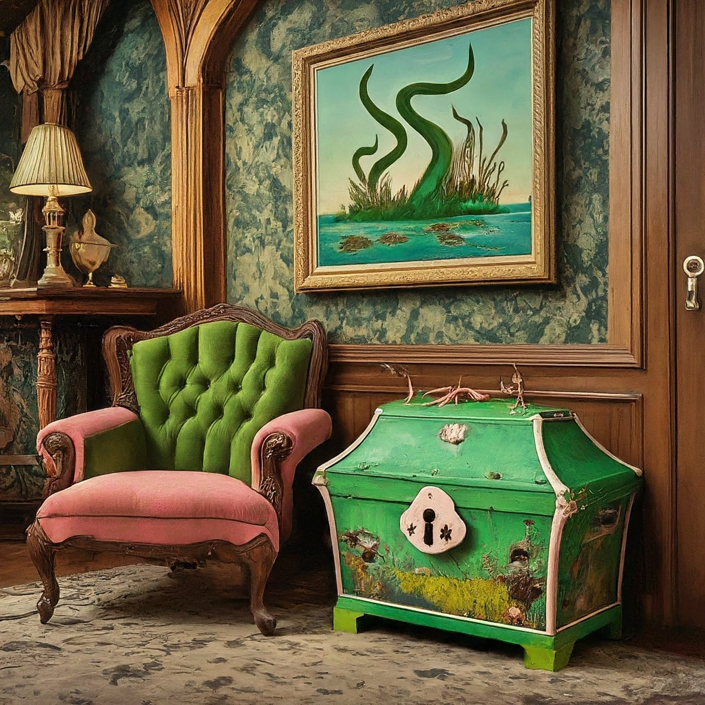
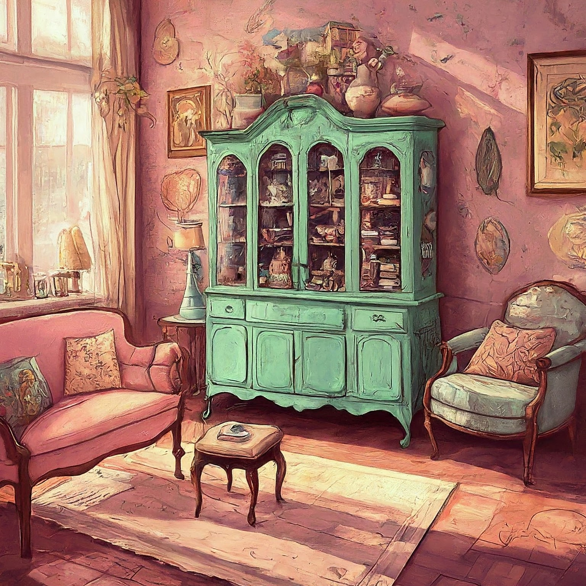
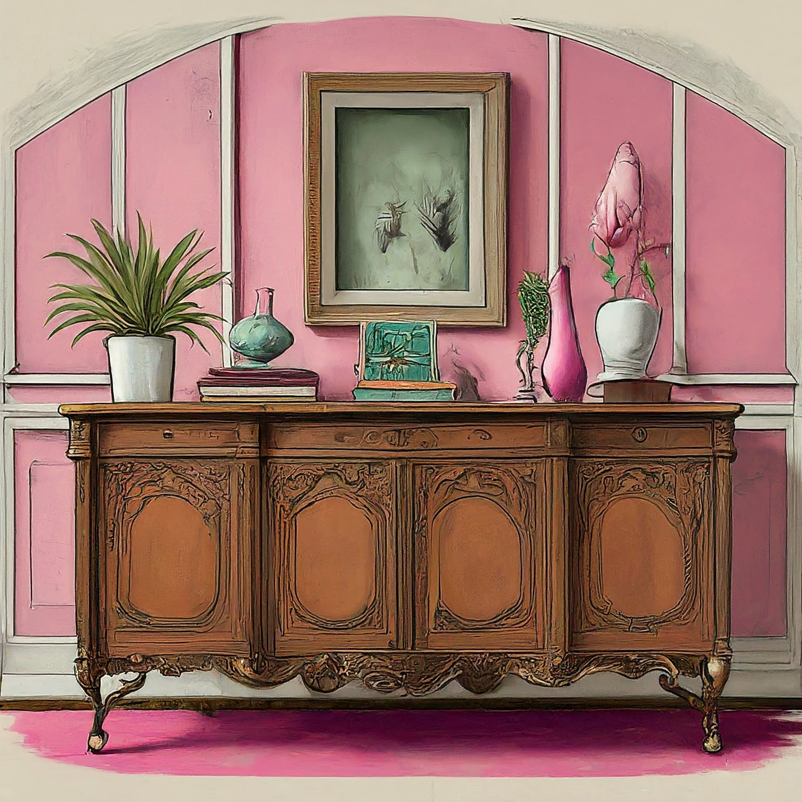
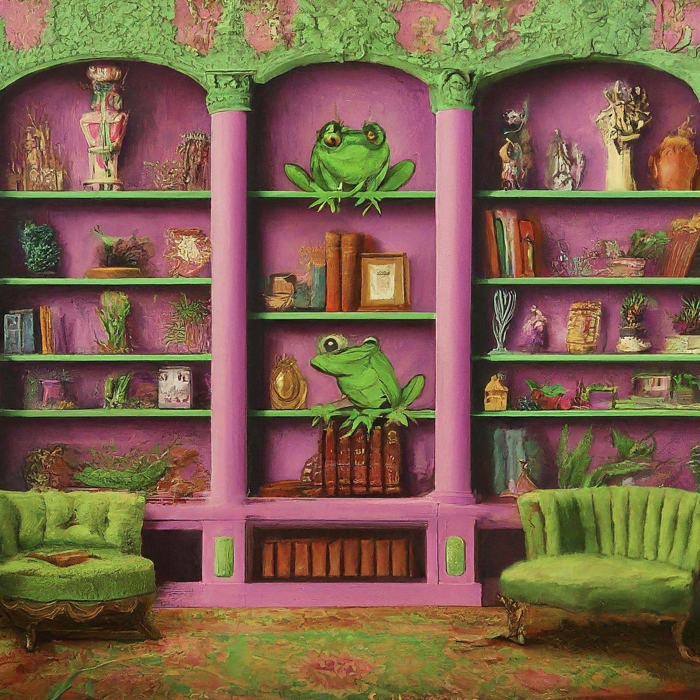

The Living Room is where we lounge together, where we laugh together, where we lollygag and languish, where our froggy families come to foil and toil. The Living Room also tends to be where we make the most messy messes. Never fear! I have a solution: storage, storage, storage! On this page you will find aesthetically pleasing storage options for keeping your living room unblemished and unsullied.
With the answers to these questions in mind, keep scrolling to view some of my favorite Living Room storage solutions.

Do you have teeny tadpoles running around? Or even perhaps a special slimy friend, like my dear pet snail, Ginger? Pictured here is one of my most favorite options to hide all of those little toys that us frivolous frogs love to hoard for our honey-sweet honeys. (Note. This image was generated by Google Gemini from the prompt vintage toy chest with swamp decorations in a pink and green fancy living room.)

If you are anything like me, you might have an abundance of quirky knicknacks that you're just dying to display. The China Cabinet is an opportune option for this, because not only is it a grand piece of furniture, but it's that perfect place for all your tiny tchotchkes that go nowhere else! A burly bonus is all of that storage underneath too! (Note. This image was generated by Google Gemini from the prompt vintage china cabinet in a fancy pink and green living room.)

The bigger the credenza, the better. While they ultimately provide a marvelous focal point for the room, credenzas are inconspicuously incredible at hiding clutter. You can put anything in here from your dvd collection, your old diaries, photoalbums, playing cards, candle sticks, linens, or lutes. (Note. This image was generated by Google Gemini from the prompt cartoon image of a credenza in a fancy pink and green living room.)

Shelves are a frog's best friend. Here you can put books, pictures, special treasures, art, anything your froggy heart desires. Baskets can be put here too to hide some of the more unsightly materials. While sparsely filled shelves may seem more aesthetic, don't be afraid to go completely maximalist. Your house guests will never run out of stuff to look at and question you about! (Note. This image was generated by Google Gemini from the prompt cartoon image of built-in shelves in a fancy pink and green living room with frog decorations.)